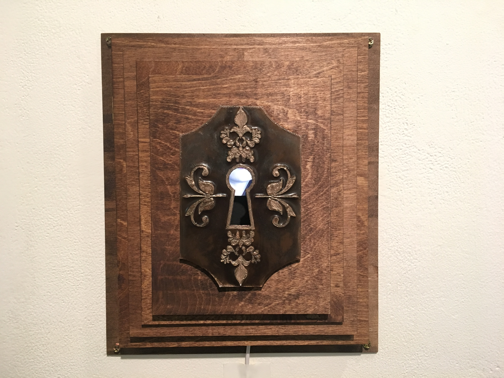
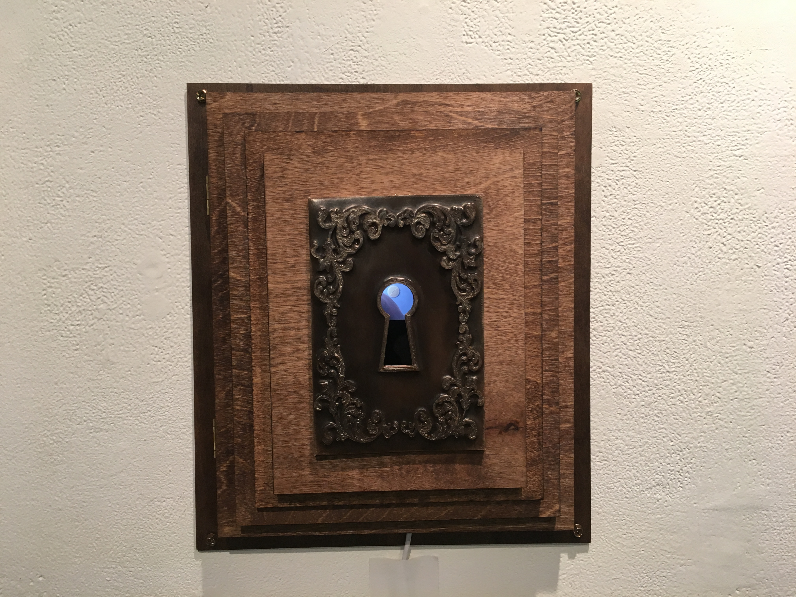
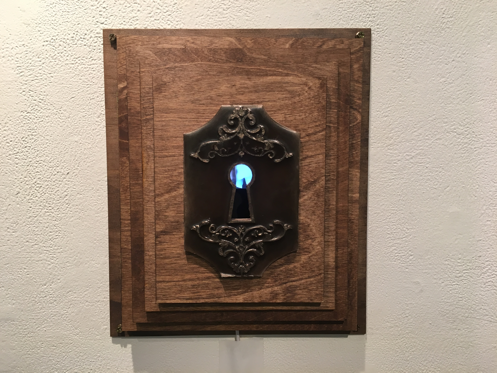
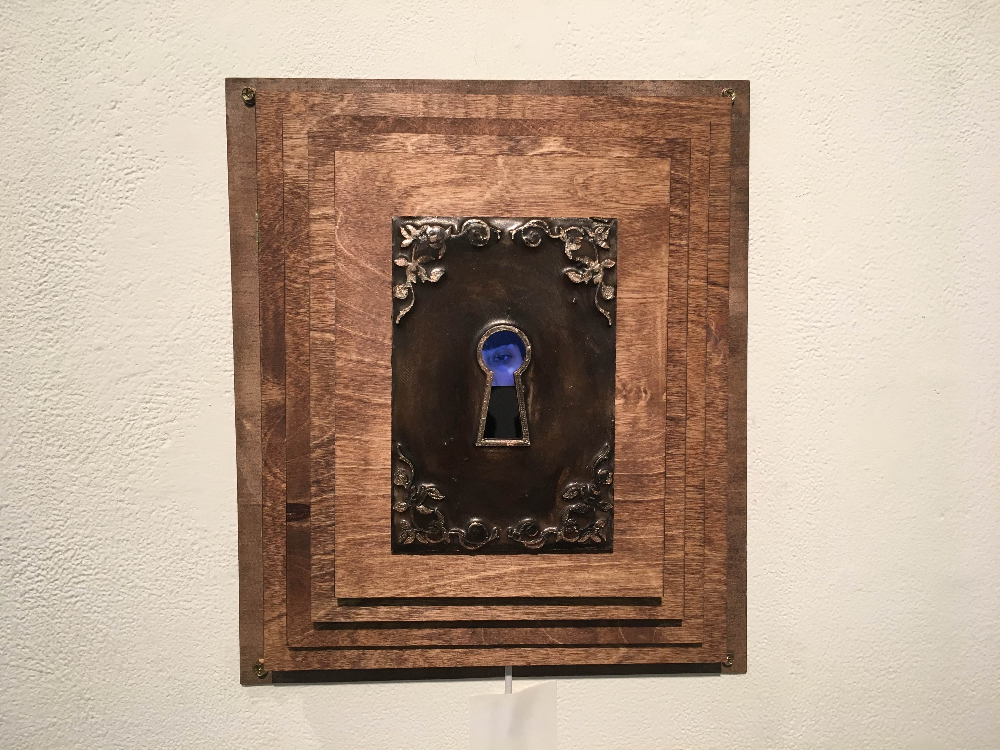
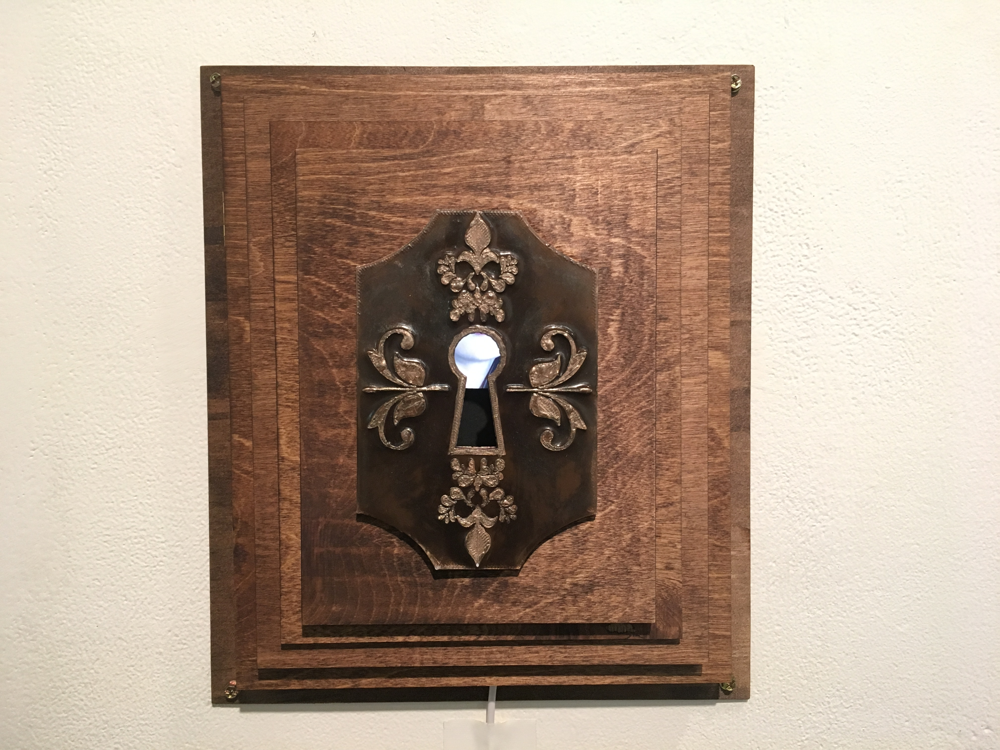
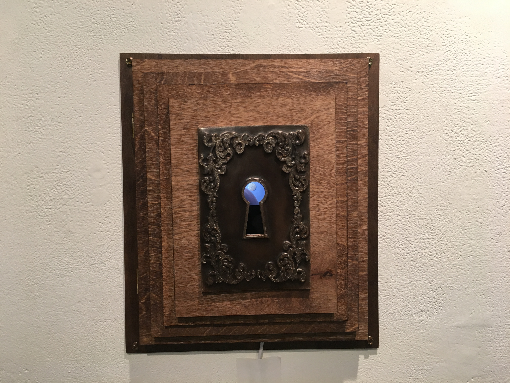
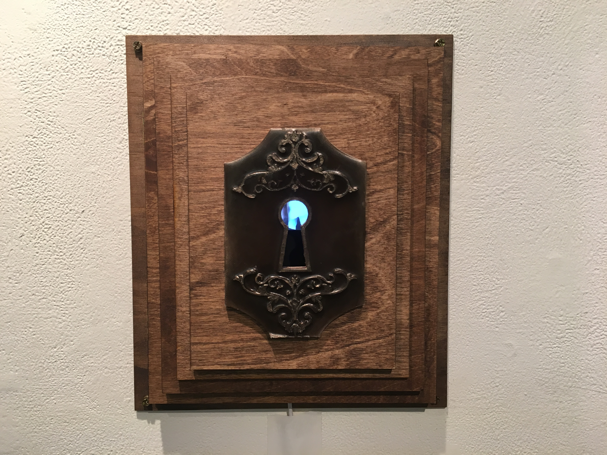
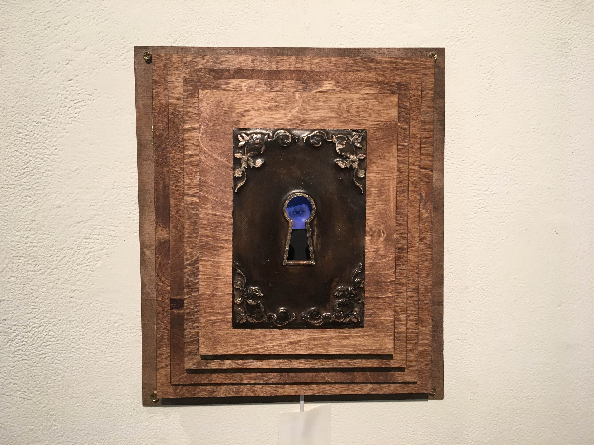

Scopophobia
Kira Boyer, Scopophobia. video, 3D print, wood, acrylic paint, paper, charcoal, steel. 2019.
No stranger to anxiety, Kira's work, Scoptophobia, addresses privacy in the digital age in the context of people's daily interactions with, or proximity to, their smart devices. Society surround themselves with technology and grant devices permission to exist as extensions of self within private and public spaces. These devices are always watching, in a way, whether they are tracking locations, being granted access to cameras and photos, collecting and selling personal data, etc. In this installation, the audience looking through the keyholes act as the voyeuristic cameras of devices looking into someone's personal world.
 






